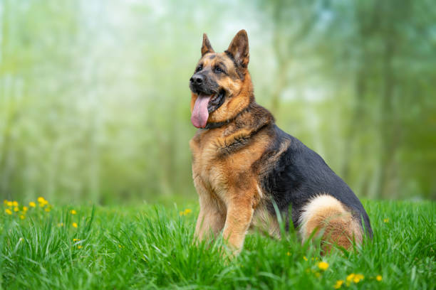

Most Common Dog Breeds
Why are these dogs so popular?
French Bulldogs, Labrador Retrievers, and German Shepherds are three of the most popular dog breeds in the world, each for their unique qualities. French Bulldogs are beloved for their compact size, affectionate nature, and adaptability to apartment living, making them ideal companions for city dwellers. Labrador Retrievers are known for their friendly, outgoing personalities, intelligence, and versatility, excelling as family pets, service dogs, and working dogs. German Shepherds are admired for their loyalty, courage, and intelligence, often serving in police, military, and search-and-rescue roles while also being devoted family protectors. Together, these breeds offer something for everyone, whether you're looking for a playful companion, a loyal guardian, or a highly trainable working dog.
French Bulldog
Origin
France
Price
$1,500 - $8,000
Lifespan
10-12 years
Full Description
French Bulldogs, often called "Frenchies," are small, muscular dogs with a smooth coat, compact build, and distinctive bat-like ears. They are known for their playful, affectionate, and easygoing nature, making them excellent companions for families and individuals alike. French Bulldogs are adaptable and do well in both apartments and houses, as they don't require a lot of exercise. They are also known for their humorous and quirky personalities, often described as "clownish." Despite their small size, they have a big presence and are incredibly loyal to their owners. However, they can be prone to certain health issues due to their brachycephalic (flat-faced) structure, so proper care and regular vet check-ups are essential.
For more information...Labrador Retriever
Origin
Newfoundland (Canada)
Price
$800 - $2,000
Lifespan
10-12 years
Full Description
Labrador Retrievers, often simply called "Labs," are one of the most popular dog breeds in the world. Originating from Newfoundland, Canada, they were originally used as fishing dogs. Labs are known for their friendly, outgoing, and high-spirited nature, making them excellent family pets, service dogs, and working dogs. They are highly intelligent, easy to train, and have a strong desire to please their owners. Labrador Retrievers are also very active and love outdoor activities, especially swimming, as they have a water-resistant coat and webbed feet. They come in three colors: black, yellow, and chocolate. Labs are loyal, loving, and great with children, making them a perfect addition to any household.
For more information...German Shepherd
Origin
German Shepherd
Price
$1,000 - $3,000
Lifespan
9-13 years
Full Description
German Shepherds are one of the most versatile and intelligent dog breeds in the world. Originating from Germany, they were originally bred for herding sheep but are now widely used as working dogs in police, military, and search-and-rescue roles. German Shepherds are known for their loyalty, courage, and confidence. They are highly trainable and excel in obedience, agility, and protection work. With their strong, muscular build and keen intelligence, they make excellent companions for active families. German Shepherds are also very protective of their loved ones and can be reserved with strangers, making them great guard dogs. Regular exercise and mental stimulation are essential to keep them happy and healthy.
For more information...